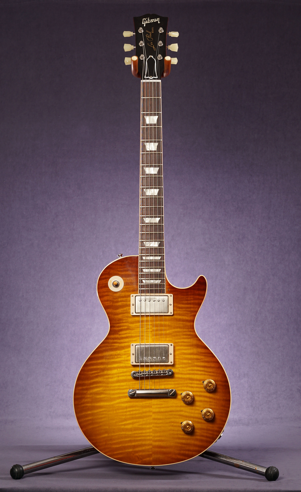

-
Telecaster
Leo Fender set out to create a guitar that would be cost effective to make, and have the bright clean tone which was then associated with country music. The full solid body with the bolt on neck have since become common but were an innovation in the early 50’s. Originally named ‘Broadcaster’ the name was quickly changed (because of copyrights) to Telecaster and became the longest selling production guitar in history. The simplicity of two single coil pickups, the removable pickguard control plate and the removable neck made servicing and assembling the guitar much easier than before.

-
Stratocaster
The Stratocaster is one of the most popular if not the number one guitar in history. The irregular double cutaway shape is almost synonymous with the term ‘electric guitar’. The shape and sound of the Strat has been copied and replicated by many companies and guitar builders. Arriving to the world at 1954 the Strat followed the Telecaster and was designed to be more and better than it’s sibling.

-
Les Paul
If you are not a Fender fan, chances are you are a Les Paul lover (and yes, you can love both) The The Gibson made Les Paul arrived on 1952 with the help of then guitarist Les Paul. It was Gibson’s first production solid Body guitar to rival the Telecaster. The Les Paul used a single cutaway and two single coil pickups but used a set-in neck, mahogany body and neck and a 24.75” scale length.
